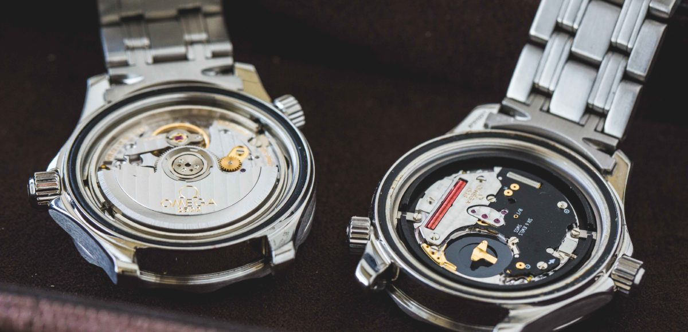
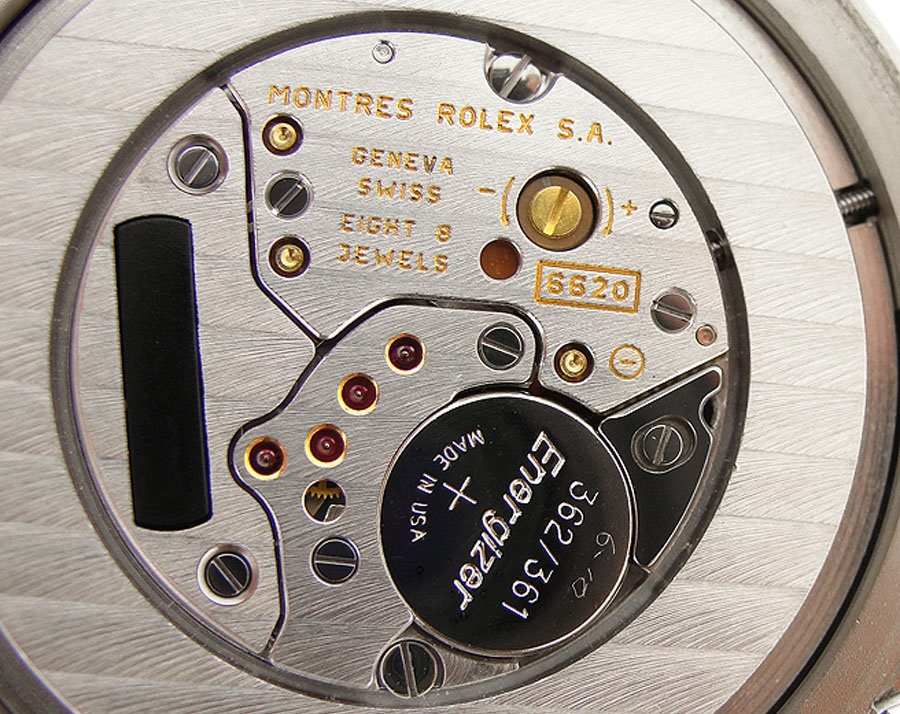

Watch Movements
The part of the watch that makes it tick is called a movement. There are several different types of movements that are good for different purposes. In this article I will go over a few of these different types and discuss the different usages for them.
Mechanical
A mechanical movement is the traditional way of keeping time. This type of clockwork has been used for a few hundred years and has become perfected over time. They are generally not quite as accurate or reliable as their competitiors. Mechanical movements genereally have a higher beat than quartz ones which is why a lot of people prefer them.
They are driven by a wound up main spring that releases the tension a little it at a time. This spring makes the balance wheel oscillate which in turn makes the hands tick. This is a very general explanation since I'm not very knowledgable about movements.

Automatic
An automatic movement is basically a mechanical movement that can also be wound up by the movement of your wrist. There is a small rotor that spins as your wrist moves around. When this rotor spins, it winds the main spring. Some automatic movements also have the ability to be hand-wound but this is generally seen in watches above 300€.
Quartz
A quartz watch is your run of the mill battery powered watch. The battery in the watch runs an electric current through a quartz crystal. As this happens, the crystal starts to vibrate. This vibration can be harnessed and in turn used to drive a movement. These types of movements are almost always more accurate than their mechanical counterparts as well as being more affordable.
Solar
Solar watches are just what they sound like. They are quartz watches equipped with solar cells, usually underneath the dial, that charge the watch. I personally prefer these types of movements to normal quartz ones since it eliminates the need for a battery change.